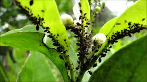
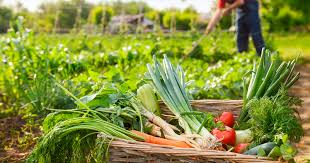

El problema
Las plagas y enfermedades pueden destruir cultivos rápidamente. Los métodos tradicionales no permiten una detección temprana ni análisis continuo.
Monitoreo inteligente de cultivos con time-lapse e IoT.
greenCODE es una solución tecnológica enfocada en la agricultura inteligente. Utilizamos sistemas automatizados de captura de imágenes para generar análisis visual del crecimiento de cultivos, permitiendo detectar plagas y optimizar la producción.
Brindar herramientas tecnológicas accesibles para mejorar la productividad agrícola mediante monitoreo inteligente.
Ser líderes en innovación AgTech en Latinoamérica, transformando el campo con datos y automatización.
Las plagas y enfermedades pueden destruir cultivos rápidamente. Los métodos tradicionales no permiten una detección temprana ni análisis continuo.


Sistema basado en Raspberry Pi con bajo consumo energético, capaz de operar con energía solar y generar video localmente.
Detección temprana
Pérdida de cultivo
Monitoreo
Ingeniero Hardware y Sistemas
Ingeniero DevOps y Despliegue
Backend y Procesamiento de Video
Frontend y UX/UI
📞 444 652 3745
📧 contacto@greencode.ag